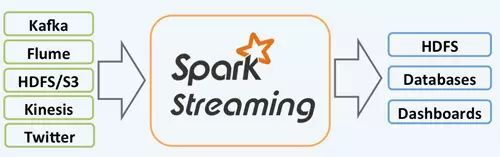
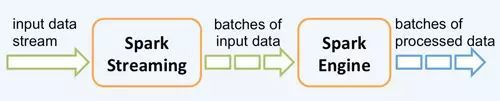
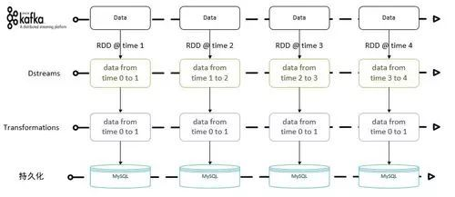
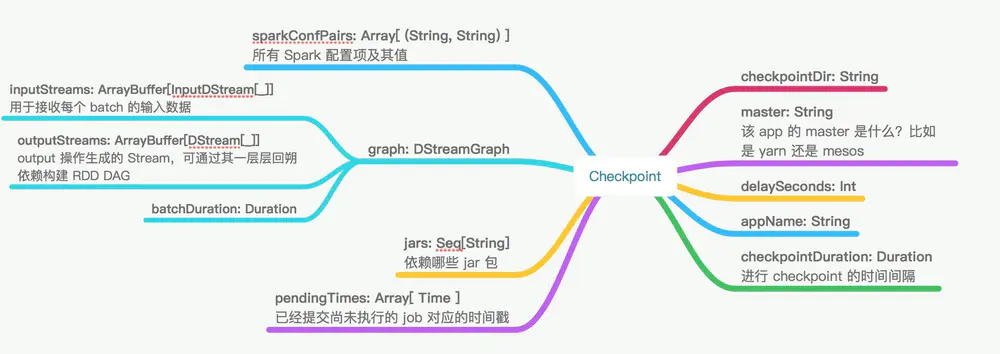

<!DOCTYPE html>
<html lang="zh-CN">
<head>
  <meta charset="UTF-8">
<meta name="viewport" content="width=device-width, initial-scale=1, maximum-scale=2">
<meta name="theme-color" content="#222">
<meta name="generator" content="Hexo 6.2.0">
  <link rel="apple-touch-icon" sizes="180x180" href="/images/apple-touch-icon-next.png">
  <link rel="icon" type="image/png" sizes="32x32" href="/images/favicon-32x32-next.png">
  <link rel="icon" type="image/png" sizes="16x16" href="/images/favicon-16x16-next.png">
  <link rel="mask-icon" href="/images/logo.svg" color="#222">

<link rel="stylesheet" href="/css/main.css">


<link rel="stylesheet" href="/lib/font-awesome/css/all.min.css">

<script id="hexo-configurations">
    var NexT = window.NexT || {};
    var CONFIG = {"hostname":"matt90luo.github.io","root":"/","scheme":"Mist","version":"7.8.0","exturl":false,"sidebar":{"position":"left","display":"post","padding":18,"offset":12,"onmobile":false},"copycode":{"enable":false,"show_result":false,"style":null},"back2top":{"enable":true,"sidebar":false,"scrollpercent":false},"bookmark":{"enable":false,"color":"#222","save":"auto"},"fancybox":false,"mediumzoom":false,"lazyload":false,"pangu":false,"comments":{"style":"tabs","active":null,"storage":true,"lazyload":false,"nav":null},"algolia":{"hits":{"per_page":10},"labels":{"input_placeholder":"Search for Posts","hits_empty":"We didn't find any results for the search: ${query}","hits_stats":"${hits} results found in ${time} ms"}},"localsearch":{"enable":false,"trigger":"auto","top_n_per_article":1,"unescape":false,"preload":false},"motion":{"enable":true,"async":false,"transition":{"post_block":"fadeIn","post_header":"slideDownIn","post_body":"slideDownIn","coll_header":"slideLeftIn","sidebar":"slideUpIn"}},"path":"./public/search.xml"};
  </script>

  <meta name="description" content="spark streaming 和 Apache Storm、Apache Flink同属于大数据实时处理框架 spark streaming的流式处理是一种基于micro-batch的想法， 这篇文章会讲解 Spark Streaming 两种计算模型，无状态和状态计算模型以及该两种模型的注意事项，最后将小结一下Spark Streaming 的优缺点。 概述 根据其官方文档介绍，Spark S">
<meta property="og:type" content="article">
<meta property="og:title" content="大数据--spark-streaming开发总结">
<meta property="og:url" content="https://matt90luo.github.io/2020/05/16/%E5%A4%A7%E6%95%B0%E6%8D%AE-spark-streaming%E5%BC%80%E5%8F%91%E6%80%BB%E7%BB%93/index.html">
<meta property="og:site_name" content="ukiml的博客">
<meta property="og:description" content="spark streaming 和 Apache Storm、Apache Flink同属于大数据实时处理框架 spark streaming的流式处理是一种基于micro-batch的想法， 这篇文章会讲解 Spark Streaming 两种计算模型，无状态和状态计算模型以及该两种模型的注意事项，最后将小结一下Spark Streaming 的优缺点。 概述 根据其官方文档介绍，Spark S">
<meta property="og:locale" content="zh_CN">
<meta property="og:image" content="https://matt90luo.github.io/2020/05/16/%E5%A4%A7%E6%95%B0%E6%8D%AE-spark-streaming%E5%BC%80%E5%8F%91%E6%80%BB%E7%BB%93/skeleton.jpeg">
<meta property="og:image" content="https://matt90luo.github.io/2020/05/16/%E5%A4%A7%E6%95%B0%E6%8D%AE-spark-streaming%E5%BC%80%E5%8F%91%E6%80%BB%E7%BB%93/process_skeleton.jpeg">
<meta property="og:image" content="https://matt90luo.github.io/2020/05/16/%E5%A4%A7%E6%95%B0%E6%8D%AE-spark-streaming%E5%BC%80%E5%8F%91%E6%80%BB%E7%BB%93/unstateful.jpeg">
<meta property="og:image" content="https://matt90luo.github.io/2020/05/16/%E5%A4%A7%E6%95%B0%E6%8D%AE-spark-streaming%E5%BC%80%E5%8F%91%E6%80%BB%E7%BB%93/checkpoint.png">
<meta property="article:published_time" content="2020-05-16T10:04:07.000Z">
<meta property="article:modified_time" content="2022-07-19T13:56:58.602Z">
<meta property="article:author" content="ukiml">
<meta property="article:tag" content="spark">
<meta name="twitter:card" content="summary">
<meta name="twitter:image" content="https://matt90luo.github.io/2020/05/16/%E5%A4%A7%E6%95%B0%E6%8D%AE-spark-streaming%E5%BC%80%E5%8F%91%E6%80%BB%E7%BB%93/skeleton.jpeg">

<link rel="canonical" href="https://matt90luo.github.io/2020/05/16/%E5%A4%A7%E6%95%B0%E6%8D%AE-spark-streaming%E5%BC%80%E5%8F%91%E6%80%BB%E7%BB%93/">


<script id="page-configurations">
  // https://hexo.io/docs/variables.html
  CONFIG.page = {
    sidebar: "",
    isHome : false,
    isPost : true,
    lang   : 'zh-CN'
  };
</script>

  <title>大数据--spark-streaming开发总结 | ukiml的博客</title>
  


  <noscript>
  <style>
  .use-motion .brand,
  .use-motion .menu-item,
  .sidebar-inner,
  .use-motion .post-block,
  .use-motion .pagination,
  .use-motion .comments,
  .use-motion .post-header,
  .use-motion .post-body,
  .use-motion .collection-header { opacity: initial; }

  .use-motion .site-title,
  .use-motion .site-subtitle {
    opacity: initial;
    top: initial;
  }

  .use-motion .logo-line-before i { left: initial; }
  .use-motion .logo-line-after i { right: initial; }
  </style>
</noscript>

</head>

<body itemscope itemtype="http://schema.org/WebPage">
  <div class="container use-motion">
    <div class="headband"></div>

    <header class="header" itemscope itemtype="http://schema.org/WPHeader">
      <div class="header-inner"><div class="site-brand-container">
  <div class="site-nav-toggle">
    <div class="toggle" aria-label="切换导航栏">
      <span class="toggle-line toggle-line-first"></span>
      <span class="toggle-line toggle-line-middle"></span>
      <span class="toggle-line toggle-line-last"></span>
    </div>
  </div>

  <div class="site-meta">

    <a href="/" class="brand" rel="start">
      <span class="logo-line-before"><i></i></span>
      <h1 class="site-title">ukiml的博客</h1>
      <span class="logo-line-after"><i></i></span>
    </a>
  </div>

  <div class="site-nav-right">
    <div class="toggle popup-trigger">
    </div>
  </div>
</div>


<nav class="site-nav">
  <ul id="menu" class="main-menu menu">
        <li class="menu-item menu-item-home">

    <a href="/" rel="section"><i class="home fa-fw"></i>首页</a>

  </li>
        <li class="menu-item menu-item-archives">

    <a href="/archives/" rel="section"><i class="archive fa-fw"></i>归档</a>

  </li>
        <li class="menu-item menu-item-about">

    <a href="/about/" rel="section"><i class="user fa-fw"></i>关于</a>

  </li>
        <li class="menu-item menu-item-tags">

    <a href="/tags/" rel="section"><i class="tags fa-fw"></i>标签</a>

  </li>
        <li class="menu-item menu-item-categories">

    <a href="/categories/" rel="section"><i class="th fa-fw"></i>分类</a>

  </li>
  </ul>
</nav>


</div>
    </header>

    
  <div class="back-to-top">
    <i class="fa fa-arrow-up"></i>
    <span>0%</span>
  </div>


    <main class="main">
      <div class="main-inner">
        <div class="content-wrap">
          

          <div class="content post posts-expand">
            

    
  
  
  <article itemscope itemtype="http://schema.org/Article" class="post-block" lang="zh-CN">
    <link itemprop="mainEntityOfPage" href="https://matt90luo.github.io/2020/05/16/%E5%A4%A7%E6%95%B0%E6%8D%AE-spark-streaming%E5%BC%80%E5%8F%91%E6%80%BB%E7%BB%93/">

    <span hidden itemprop="author" itemscope itemtype="http://schema.org/Person">
      <meta itemprop="image" content="/images/avatar.gif">
      <meta itemprop="name" content="ukiml">
      <meta itemprop="description" content="">
    </span>

    <span hidden itemprop="publisher" itemscope itemtype="http://schema.org/Organization">
      <meta itemprop="name" content="ukiml的博客">
    </span>
      <header class="post-header">
        <h1 class="post-title" itemprop="name headline">
          大数据--spark-streaming开发总结
        </h1>

        <div class="post-meta">
            <span class="post-meta-item">
              <span class="post-meta-item-icon">
                <i class="far fa-calendar"></i>
              </span>
              <span class="post-meta-item-text">发表于</span>

              <time title="创建时间：2020-05-16 10:04:07" itemprop="dateCreated datePublished" datetime="2020-05-16T10:04:07+00:00">2020-05-16</time>
            </span>
            <span class="post-meta-item">
              <span class="post-meta-item-icon">
                <i class="far fa-folder"></i>
              </span>
              <span class="post-meta-item-text">分类于</span>
                <span itemprop="about" itemscope itemtype="http://schema.org/Thing">
                  <a href="/categories/%E5%A4%A7%E6%95%B0%E6%8D%AE/" itemprop="url" rel="index"><span itemprop="name">大数据</span></a>
                </span>
            </span>

          <br>
            <span class="post-meta-item" title="本文字数">
              <span class="post-meta-item-icon">
                <i class="far fa-file-word"></i>
              </span>
                <span class="post-meta-item-text">本文字数：</span>
              <span>7.4k</span>
            </span>
            <span class="post-meta-item" title="阅读时长">
              <span class="post-meta-item-icon">
                <i class="far fa-clock"></i>
              </span>
                <span class="post-meta-item-text">阅读时长 &asymp;</span>
              <span>7 分钟</span>
            </span>

        </div>
      </header>

    
    
    
    <div class="post-body" itemprop="articleBody">

      
        <p>spark streaming 和 Apache Storm、Apache Flink同属于大数据实时处理框架 spark streaming的流式处理是一种基于micro-batch的想法， 这篇文章会讲解 Spark Streaming 两种计算模型，无状态和状态计算模型以及该两种模型的注意事项，最后将小结一下Spark Streaming 的优缺点。</p>
<h2 id="概述">概述</h2>
<p>根据其官方文档介绍，Spark Streaming 有高扩展性、高吞吐量和容错能力强的特点。Spark Streaming 支持的数据输入源很多，例如：Kafka、Flume、Twitter、ZeroMQ 和简单的 TCP 套接字等等。原生支持常用的spark transform操作如：map、reduce、join、window 等进行运算。而结果有多种方式sink。并且可以和已有的spark MLlib完美衔接。其优秀的特点使用于多种业务场景，比如监控，网页点击、实时推荐等 <span id="more"></span> </p>
<h2 id="应用场景">应用场景</h2>
<p>基于micro-batch思想的流式处理, 处理数据的单位是一批而不是单条，而数据采集却是逐条进行的，因此 Spark Streaming 系统需要设置间隔使得数据汇总到一定的量后再一并操作，这个间隔就是批处理间隔。批处理间隔是 Spark Streaming 的核心概念和关键参数，它决定了 Spark Streaming 提交作业的频率和数据处理的延迟，同时也影响着数据处理的吞吐量和性能。 </p>
<p>spark streaming有两种获取数据的模式</p>
<ol type="1">
<li><strong>基于Receiver的方式</strong></li>
</ol>
<p>这种方式使用Receiver来获取数据。Receiver是使用Kafka的高层次Consumer API来实现的。receiver从Kafka中获取的数据都是存储在Spark Executor的内存中的，然后Spark Streaming启动的job会去处理那些数据。在默认的配置下，这种方式可能会因为底层的失败而丢失数据。如果要启用高可靠机制，让数据零丢失，就必须启用Spark Streaming的预写日志机制（Write Ahead Log，WAL。该机制会同步地将接收到的Kafka数据写入分布式文件系统（比如HDFS）上的预写日志中。所以，即使底层节点出现了失败，也可以使用预写日志中的数据进行恢复。需要注意的要点 &gt; - Kafka中的topic的partition，与Spark中的RDD的partition是没有关系的。所以，在KafkaUtils.createStream()中，提高partition的数量，只会增加一个Receiver中，读取partition的线程的数量。不会增加Spark处理数据的并行度。</p>
<blockquote>
<ul>
<li>可以创建多个Kafka输入DStream，使用不同的consumer group和topic，来通过多个receiver并行接收数据。</li>
</ul>
</blockquote>
<blockquote>
<ul>
<li>如果基于容错的文件系统，比如HDFS，启用了预写日志机制，接收到的数据都会被复制一份到预写日志中。因此，在KafkaUtils.createStream()中，设置的持久化级别是StorageLevel.MEMORY_AND_DISK_SER。</li>
</ul>
</blockquote>
<ol start="2" type="1">
<li><strong>基于Direct的方式</strong></li>
</ol>
<p>这种新的不基于Receiver的直接方式，是在Spark 1.3中引入的，从而能够确保更加健壮的机制。替代掉使用Receiver来接收数据后，这种方式会周期性地查询Kafka，来获得每个topic+partition的最新的offset，从而定义每个batch的offset的范围。当处理数据的job启动时，就会使用Kafka的简单consumer api来获取Kafka指定offset范围的数据。Direct方式的优点:</p>
<blockquote>
<ul>
<li>简化并行读取：如果要读取多个partition，不需要创建多个输入DStream然后对它们进行union操作。 Spark会创建跟Kafka partition一样多的RDD partition，并且会并行从Kafka中读取数据。所以在Kafka partition和RDD partition之间，有一个一对一的映射关系。</li>
</ul>
</blockquote>
<blockquote>
<ul>
<li>高性能：如果要保证零数据丢失，在基于receiver的方式中，需要开启WAL机制。这种方式其实效率低下， 因为数据实际上被复制了两份，Kafka自己本身就有高可靠的机制，会对数据复制一份，而这里又会复制一份到WAL中。而基于direct的方式，不依赖Receiver，不需要开启WAL机制，只要Kafka中作了数据的复制，那么就可以通过Kafka的副本进行恢复。</li>
</ul>
</blockquote>
<blockquote>
<ul>
<li>一次且仅一次的事务机制： 基于receiver的方式，是使用Kafka的高阶API来在ZooKeeper中保存消费过的offset的。这是消费Kafka数据的传统方式。 这种方式配合着WAL机制可以保证数据零丢失的高可靠性，但是却无法保证数据被处理一次且仅一次，可能会处理两次。因为Spark和ZooKeeper之间可能是不同步的。</li>
</ul>
</blockquote>
<blockquote>
<ul>
<li>降低资源。  Direct不需要Receivers，其申请的Executors全部参与到计算任务中；而Receiver-based则需要专门的Receivers来读取Kafka数据且不参与计算。因此相同的资源申请，Direct 能够支持更大的业务。</li>
</ul>
</blockquote>
<blockquote>
<ul>
<li>降低内存。  Receiver-based的Receiver与其他Exectuor是异步的，并持续不断接收数据，对于小业务量的场景还好，如果遇到大业务量时，需要提高Receiver的内存，但是参与计算的Executor并无需那么多的内存。 而Direct 因为没有Receiver，而是在计算时读取数据，然后直接计算，所以对内存的要求很低。实际应用中我们可以把原先的10G降至现在的2-4G左右。</li>
</ul>
</blockquote>
<blockquote>
<ul>
<li>鲁棒性更好。  Receiver-based方法需要Receivers来异步持续不断的读取数据，因此遇到网络、存储负载等因素，导致实时任务出现堆积，但Receivers却还在持续读取数据，此种情况很容易导致计算崩溃。 Direct 则没有这种顾虑，其Driver在触发batch 计算任务时，才会读取数据并计算。队列出现堆积并不会引起程序的失败。 基于direct的方式，使用kafka的简单api，Spark Streaming自己就负责追踪消费的offset，并保存在checkpoint中。Spark自己一定是同步的，因此可以保证数据是消费一次且仅消费一次。</li>
</ul>
</blockquote>
<h3 id="无状态模型">无状态模型</h3>
<p>无状态模型只关注当前新生成的 DStream 数据，所以的计算逻辑均基于该批次的数据进行处理。无状态模型能够很好地适应一些应用场景，比如网站点击实时排行榜、指定 batch 时间段的用户访问以及点击情况等。该模型由于没有状态，并不需要考虑有状态的情况，只需要根据业务场景保证数据不丢就行。此种情况一般采用 Direct 方式读取 Kafka 数据，并采用监听器方式持久化 Offsets 即可。具体流程如下  包括如下几个步骤 - 读取数据 - Transformation 和 Action操作 - sink操作(数据持久化) 无状态模型下如果程序出现长时间失败，根据业务具体要求选择从之前Kafka offset处消费或者从kafka largest处消费</p>
<h3 id="状态模型">状态模型</h3>
<p>状态模型是指 DStreams 在指定的时间范围内有依赖关系，具体的时间范围由业务场景来指定，可以是 2 个及以上的多个 batch time RDD 组成。Spark Streaming 提供了 updateStateByKey 方法来满足此类的业务场景。因涉及状态的问题，所以在实际的计算过程中需要保存计算的状态，Spark Streaming通过 checkpoint 来保存计算的元数据以及计算的进度。在有状态流式处理下，满足以下任意一个条件需要开启checkpoingting - 使用了stateful转换 如果 application 中使用了updateStateByKey或reduceByKeyAndWindow等 stateful 操作，必须提供checkpoint目录来允许定时的RDD checkpoint - 希望能从意外中恢复 driver 如果 streaming app 没有 stateful 操作，也允许 driver 挂掉后再次重启的进度丢失，就没有启用 checkpoint的必要了。 需要注意的是，随着 streaming application 的持续运行，checkpoint 数据占用的存储空间会不断变大。因此，需要小心设置checkpoint 的时间间隔。设置得越小，checkpoint 次数会越多，占用空间会越大；如果设置越大，会导致恢复时丢失的数据和进度越多。一般推荐设置为 batch duration 的5~10倍。</p>
<h3 id="checkpoint">checkpoint</h3>
<ul>
<li><p><strong>checkpoint的形式</strong> 最终 checkpoint 的形式是将类 Checkpoint的实例序列化后写入外部存储，值得一提的是，有专门的一条线程来做将序列化后的 checkpoint 写入外部存储。类 Checkpoint 包含以下数据 </p></li>
<li><p><strong>Checkpoint 的局限</strong> Spark Streaming 的 checkpoint 机制看起来很美好，却有一个硬伤。上文提到最终刷到外部存储的是类 Checkpoint 对象序列化后的数据。那么在 Spark Streaming application 重新编译后，再去反序列化 checkpoint 数据就会失败。这个时候就必须新建 StreamingContext。</p></li>
</ul>
<p>针对这种情况，在我们结合 Spark Streaming + kafka 的应用中，我们自行维护了消费的 offsets，这样一来即使重新编译 application，还是可以从需要的 offsets 来消费数据，这种方法应该是比较好的方法</p>
<h2 id="spark反压机制详解">spark反压机制详解</h2>
<h3 id="背景">背景</h3>
<p>对于基于Receiver 形式，我们可以通过配置 spark.streaming.receiver.maxRate 参数来限制每个 receiver 每秒最大可以接收的记录的数据；对于 Direct Approach 的数据接收，我们可以通过配置 spark.streaming.kafka.maxRatePerPartition 参数来限制每次作业中每个 Kafka 分区最多读取的记录条数。</p>
<p>默认情况下，Spark Streaming通过Receiver以生产者生产数据的速率接收数据，计算过程中会出现batch processing time &gt; batch interval的情况，其中batch processing time 为实际计算一个批次花费时间， batch interval为Streaming应用设置的批处理间隔。这意味着Spark Streaming的数据接收速率高于Spark从队列中移除数据的速率，也就是数据处理能力低，在设置间隔内不能完全处理当前接收速率接收的数据。如果这种情况持续过长的时间，会造成数据在内存中堆积，导致Receiver所在Executor内存溢出等问题（如果设置StorageLevel包含disk, 则内存存放不下的数据会溢写至disk, 加大延迟）。Spark 1.5以前版本，用户如果要限制Receiver的数据接收速率，可以通过设置静态配制参数“spark.streaming.receiver.maxRate”的值来实现，此举虽然可以通过限制接收速率，来适配当前的处理能力，防止内存溢出，但也会引入其它问题。比如：producer数据生产高于maxRate，当前集群处理能力也高于maxRate，这就会造成资源利用率下降等问题。为了更好的协调数据接收速率与资源处理能力，Spark Streaming 从v1.5开始引入反压机制（back-pressure）,通过动态控制数据接收速率来适配集群数据处理能力。</p>
<p>当Spark Streaming与Kafka使用Direct API集群时，我们可以很方便的去控制最大数据摄入量--通过一个被称作spark.streaming.kafka.maxRatePerPartition的参数。根据文档描述，他的含义是：Direct API读取每一个Kafka partition数据的最大速率（每秒读取的消息量）。 配置项spark.streaming.kafka.maxRatePerPartition，对防止流式应用在下边两种情况下出现流量过载时尤其重要：</p>
<ol type="1">
<li><p>Kafka Topic中有大量未处理的消息，并且我们设置是Kafka auto.offset.reset参数值为smallest，他可以防止第一个批次出现数据流量过载情况。</p></li>
<li><p>当Kafka 生产者突然飙升流量的时候，他可以防止批次处理出现数据流量过载情况。</p></li>
</ol>
<p>但是，配置Kafka每个partition每批次最大的摄入量是个静态值，也算是个缺点。随着时间的变化，在生产环境运行了一段时间的Spark Streaming应用，每批次每个Kafka partition摄入数据最大量的最优值也是变化的。有时候，是因为消息的大小会变，导致数据处理时间变化。有时候，是因为流计算所使用的多租户集群会变得非常繁忙，比如在白天时候，一些其他的数据应用（例如Impala/Hive/MR作业）竞争共享的系统资源时（CPU/内存/网络/磁盘IO）。</p>
<p>这种限速的弊端很明显，比如假如我们后端处理能力超过了这个最大的限制，会导致资源浪费。需要对每个spark Streaming任务进行压测预估。成本比较高。为了Spark Streaming应用能在生产中稳定、有效的执行，每批次数据处理时间（批处理时间）必须非常接近批次调度的时间间隔（批调度间隔），并且要一直低于批调度间隔。如果批处理时间一直高于批调度间隔，调度延迟就会一直增长并且不会恢复。最终，Spark Streaming应用会变得不再稳定。另一方面，如果批处理时间长时间远小于批调度间隔，就会浪费集群资源。</p>
<p>由此，从1.5开始引入了back pressure，这种机制呢实际上是基于自动控制理论的pid这个概念。我们就简单讲一下其中思路：为了实现自动调节数据的传输速率，在原有的架构上新增了一个名为 RateController 的组件，这个组件继承自 StreamingListener，其监听所有作业的 onBatchCompleted 事件，并且基于 processingDelay 、schedulingDelay 、当前 Batch 处理的记录条数以及处理完成事件来估算出一个速率；这个速率主要用于更新流每秒能够处理的最大记录的条数。这样就可以实现处理能力好的话就会有一个较大的最大值，处理能力下降了就会生成一个较小的最大值。来保证Spark Streaming流畅运行。</p>
<h3 id="背压机制">背压机制</h3>
<p>为了开启背压机制，需要设置sparkConf.set(&quot;spark.streaming.backpressure.enabled&quot;,”true”)</p>
<ol type="1">
<li>设置一个batch RDD中的一个分区的最大消息数, 这个数值可以是最优估计值的1.5到2倍</li>
<li>开启背压 会自动调节读取的message数 所以需要我们对于一个最优的估计值要有认识(基于现有逻辑以及kafka峰值)</li>
</ol>
<p>spark streamning的处理能力受到两方面因素影响</p>
<ol type="1">
<li>kafka的生产消息能力</li>
<li>在一个batch time之间的处理数据的能力 所以中间需要一个背压机制(本质是一个PID控制器)来调节 确保RDD在一个batch time内全部执行完 不产生积压(通过少读取kafka消息来实现)</li>
</ol>
<p>那应用启动后的第一个批次流量怎么控制呢？因为他没有前面批次的数据处理时间，所以没有参考的数据去评估这一批次最优的摄入量。在Spark官方文档中有个被称作spark.streaming.backpressure.initialRate的配置，看起来是控制开启背压机制时初始化的摄入量。其实不然，该参数只对receiver模式起作用，并不适用于direct模式。推荐的方法是使用spark.streaming.kafka.maxRatePerPartition控制背压机制起作用前的第一批次数据的最大摄入量。我通常建议设置spark.streaming.kafka.maxRatePerPartition的值为最优估计值的1.5到2倍，让背压机制的算法去调整后续的值。请注意，spark.streaming.kafka.maxRatePerPartition的值会一直控制最大的摄入量，所以背压机制的算法值不会超过他。   另一个需要注意的是，在第一个批次处理完成前，紧接着的批次都将使用spark.streaming.kafka.maxRatePerPartition的值作为摄入量。我们通过Spark UI可以看到，批次间隔为5s，当批次调度延迟31秒时候，前7个批次的摄入量是20条记录。直到第八个批次，背压机制起作用时，摄入量变为5条记录。</p>
<h2 id="spark-streaming-小结">Spark Streaming 小结</h2>
<p>Spark-Streaming获取kafka数据的两种方式-Receiver与Direct的方式，可以从代码中简单理解成Receiver方式是通过zookeeper来连接kafka队列，Direct方式是直接连接到kafka的节点上获取数据了。</p>
<ul>
<li><strong>优点</strong></li>
</ul>
<ol type="1">
<li><p>Spark Streaming 基于 Spark Core API，因此其能够与 Spark 中的其他模块保持良好的兼容性，为编程提供了良好的可扩展性;</p></li>
<li><p>Spark Streaming 是粗粒度的准实时处理框架，一次读取完或异步读完之后处理数据，且其计算可基于大内存进行，因而具有较高的吞吐量;</p></li>
<li><p>Spark Streaming 采用统一的 DAG 调度以及 RDD，因此能够利用其lineage 机制，对实时计算有很好的容错支持;</p></li>
<li><p>Spark Streaming 的 DStream 是基于 RDD 的在流式数据处理方面的抽象，其 transformations 以及 actions 有较大的相似性，这在一定程度上降低了用户的使用门槛，在熟悉 Spark 之后，能够快速上手 Spark Streaming。</p></li>
</ol>
<ul>
<li><strong>不足</strong></li>
</ul>
<ol type="1">
<li>Spark Streaming 是准实时的数据处理框架，采用粗粒度的处理方式，当 batch time 到时才会触发计算，这并非像 Storm 那样是纯流式的数据处理方式。此种方式不可避免会出现相应的计算延迟。</li>
</ol>

    </div>

    
    
    

      <footer class="post-footer">
          <div class="post-tags">
              <a href="/tags/spark/" rel="tag"># spark</a>
          </div>

        


        
    <div class="post-nav">
      <div class="post-nav-item">
    <a href="/2020/05/08/%E5%A4%A7%E6%95%B0%E6%8D%AE-spark%E5%BA%94%E7%94%A8%E6%80%A7%E8%83%BD%E4%BC%98%E5%8C%96%E5%B8%B8%E8%A7%81%E9%94%99%E8%AF%AF%E5%A4%84%E7%90%86/" rel="prev" title="大数据--spark应用性能优化常见错误处理">
      <i class="fa fa-chevron-left"></i> 大数据--spark应用性能优化常见错误处理
    </a></div>
      <div class="post-nav-item">
    <a href="/2020/05/20/%E6%8E%A8%E8%8D%90%E7%B3%BB%E7%BB%9F-%E4%BD%BF%E7%94%A8ALS%E6%B1%82%E8%A7%A3LFM%E6%A8%A1%E5%9E%8B/" rel="next" title="推荐系统-使用ALS求解LFM模型">
      推荐系统-使用ALS求解LFM模型 <i class="fa fa-chevron-right"></i>
    </a></div>
    </div>
      </footer>
    
  </article>
  
  
  


          </div>
          
    <div class="comments" id="gitalk-container"></div>

<script>
  window.addEventListener('tabs:register', () => {
    let { activeClass } = CONFIG.comments;
    if (CONFIG.comments.storage) {
      activeClass = localStorage.getItem('comments_active') || activeClass;
    }
    if (activeClass) {
      let activeTab = document.querySelector(`a[href="#comment-${activeClass}"]`);
      if (activeTab) {
        activeTab.click();
      }
    }
  });
  if (CONFIG.comments.storage) {
    window.addEventListener('tabs:click', event => {
      if (!event.target.matches('.tabs-comment .tab-content .tab-pane')) return;
      let commentClass = event.target.classList[1];
      localStorage.setItem('comments_active', commentClass);
    });
  }
</script>

        </div>
          
  
  <div class="toggle sidebar-toggle">
    <span class="toggle-line toggle-line-first"></span>
    <span class="toggle-line toggle-line-middle"></span>
    <span class="toggle-line toggle-line-last"></span>
  </div>

  <aside class="sidebar">
    <div class="sidebar-inner">

      <ul class="sidebar-nav motion-element">
        <li class="sidebar-nav-toc">
          文章目录
        </li>
        <li class="sidebar-nav-overview">
          站点概览
        </li>
      </ul>

      <!--noindex-->
      <div class="post-toc-wrap sidebar-panel">
          <div class="post-toc motion-element"><ol class="nav"><li class="nav-item nav-level-2"><a class="nav-link" href="#%E6%A6%82%E8%BF%B0"><span class="nav-number">1.</span> <span class="nav-text">概述</span></a></li><li class="nav-item nav-level-2"><a class="nav-link" href="#%E5%BA%94%E7%94%A8%E5%9C%BA%E6%99%AF"><span class="nav-number">2.</span> <span class="nav-text">应用场景</span></a><ol class="nav-child"><li class="nav-item nav-level-3"><a class="nav-link" href="#%E6%97%A0%E7%8A%B6%E6%80%81%E6%A8%A1%E5%9E%8B"><span class="nav-number">2.1.</span> <span class="nav-text">无状态模型</span></a></li><li class="nav-item nav-level-3"><a class="nav-link" href="#%E7%8A%B6%E6%80%81%E6%A8%A1%E5%9E%8B"><span class="nav-number">2.2.</span> <span class="nav-text">状态模型</span></a></li><li class="nav-item nav-level-3"><a class="nav-link" href="#checkpoint"><span class="nav-number">2.3.</span> <span class="nav-text">checkpoint</span></a></li></ol></li><li class="nav-item nav-level-2"><a class="nav-link" href="#spark%E5%8F%8D%E5%8E%8B%E6%9C%BA%E5%88%B6%E8%AF%A6%E8%A7%A3"><span class="nav-number">3.</span> <span class="nav-text">spark反压机制详解</span></a><ol class="nav-child"><li class="nav-item nav-level-3"><a class="nav-link" href="#%E8%83%8C%E6%99%AF"><span class="nav-number">3.1.</span> <span class="nav-text">背景</span></a></li><li class="nav-item nav-level-3"><a class="nav-link" href="#%E8%83%8C%E5%8E%8B%E6%9C%BA%E5%88%B6"><span class="nav-number">3.2.</span> <span class="nav-text">背压机制</span></a></li></ol></li><li class="nav-item nav-level-2"><a class="nav-link" href="#spark-streaming-%E5%B0%8F%E7%BB%93"><span class="nav-number">4.</span> <span class="nav-text">Spark Streaming 小结</span></a></li></ol></div>
      </div>
      <!--/noindex-->

      <div class="site-overview-wrap sidebar-panel">
        <div class="site-author motion-element" itemprop="author" itemscope itemtype="http://schema.org/Person">
  <p class="site-author-name" itemprop="name">ukiml</p>
  <div class="site-description" itemprop="description"></div>
</div>
<div class="site-state-wrap motion-element">
  <nav class="site-state">
      <div class="site-state-item site-state-posts">
          <a href="/archives/">
        
          <span class="site-state-item-count">17</span>
          <span class="site-state-item-name">日志</span>
        </a>
      </div>
      <div class="site-state-item site-state-categories">
            <a href="/categories/">
          
        <span class="site-state-item-count">6</span>
        <span class="site-state-item-name">分类</span></a>
      </div>
      <div class="site-state-item site-state-tags">
            <a href="/tags/">
          
        <span class="site-state-item-count">5</span>
        <span class="site-state-item-name">标签</span></a>
      </div>
  </nav>
</div>


      </div>

    </div>
  </aside>
  <div id="sidebar-dimmer"></div>


      </div>
    </main>

    <footer class="footer">
      <div class="footer-inner">
        

        

<div class="copyright">
  
  &copy; 
  <span itemprop="copyrightYear">2022</span>
  <span class="with-love">
    <i class="user"></i>
  </span>
  <span class="author" itemprop="copyrightHolder">ukiml</span>
    <span class="post-meta-divider">|</span>
    <span class="post-meta-item-icon">
      <i class="fa fa-chart-area"></i>
    </span>
    <span title="站点总字数">147k</span>
    <span class="post-meta-divider">|</span>
    <span class="post-meta-item-icon">
      <i class="fa fa-coffee"></i>
    </span>
    <span title="站点阅读时长">2:14</span>
</div>
  <div class="powered-by">由 <a href="https://hexo.io/" class="theme-link" rel="noopener" target="_blank">Hexo</a> & <a href="https://mist.theme-next.org/" class="theme-link" rel="noopener" target="_blank">NexT.Mist</a> 强力驱动
  </div>

        


      </div>
    </footer>
  </div>

  
  <script src="/lib/anime.min.js"></script>
  <script src="/lib/velocity/velocity.min.js"></script>
  <script src="/lib/velocity/velocity.ui.min.js"></script>

<script src="/js/utils.js"></script>

<script src="/js/motion.js"></script>


<script src="/js/schemes/muse.js"></script>


<script src="/js/next-boot.js"></script>


  


<script>
if (document.querySelectorAll('pre.mermaid').length) {
  NexT.utils.getScript('//cdnjs.cloudflare.com/ajax/libs/mermaid/8.4.8/mermaid.min.js', () => {
    mermaid.initialize({
      theme    : 'forest',
      logLevel : 3,
      flowchart: { curve     : 'linear' },
      gantt    : { axisFormat: '%m/%d/%Y' },
      sequence : { actorMargin: 50 }
    });
  }, window.mermaid);
}
</script>


  

  

  

<link rel="stylesheet" href="//cdn.jsdelivr.net/npm/gitalk@1/dist/gitalk.min.css">

<script>
NexT.utils.loadComments(document.querySelector('#gitalk-container'), () => {
  NexT.utils.getScript('//cdn.jsdelivr.net/npm/gitalk@1/dist/gitalk.min.js', () => {
    var gitalk = new Gitalk({
      clientID    : '5b91b1ad9dd50225f33e',
      clientSecret: '19f46a8f45a6d87bb1bda4ad724df3e37d557201',
      repo        : 'matt90luo.github.io',
      owner       : 'matt90luo',
      admin       : ['matt90luo'],
      id          : 'd87c85969ab4a7ddb41f772adf61c947',
        language: '',
      distractionFreeMode: true
    });
    gitalk.render('gitalk-container');
  }, window.Gitalk);
});
</script>

</body>
</html>
